Stephanie Bermudez
Between tech, strategy and planning for social impact initiatives. Currently focused on early stage projects creating clearer and effective experiences. Formative education in front-end and UX (2016), Digital Creativity (2021) and Advertising Management (2017-2023).
Pet Services App (NDA)
Pet-tech · 2026
Requirement: Development of an MVP-1 to address pet owners' pain points (transparency of veterinary services, proximity in emergencies and health).
Organized the UX/UI team, led market and user research, unified flows and low-fi wireframes.
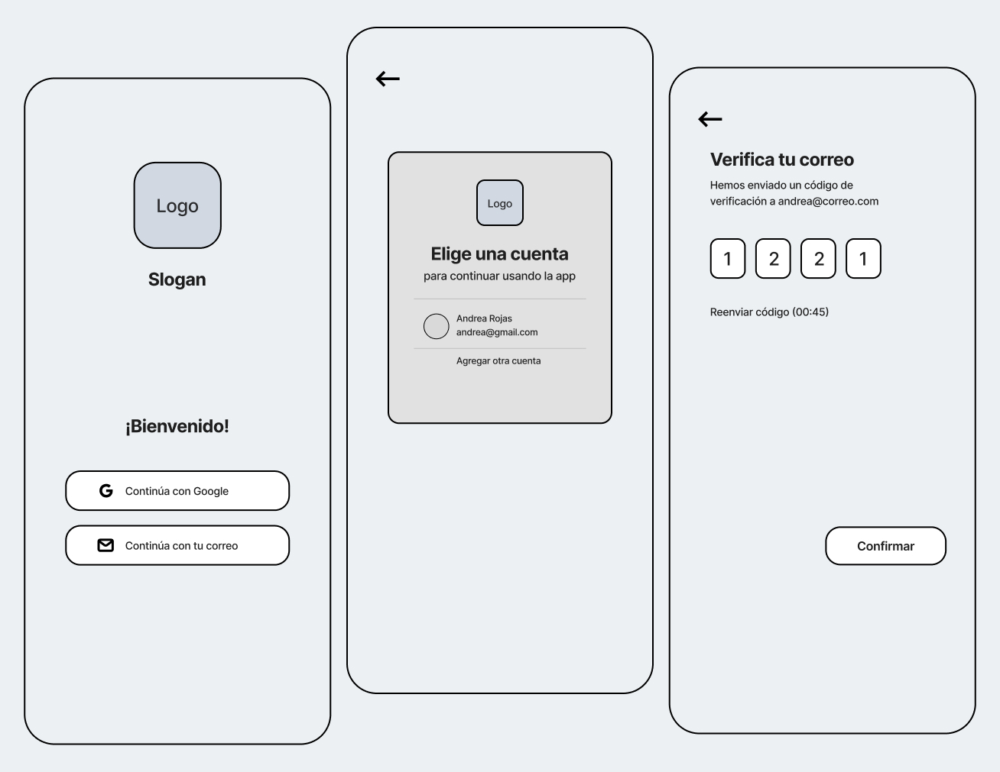
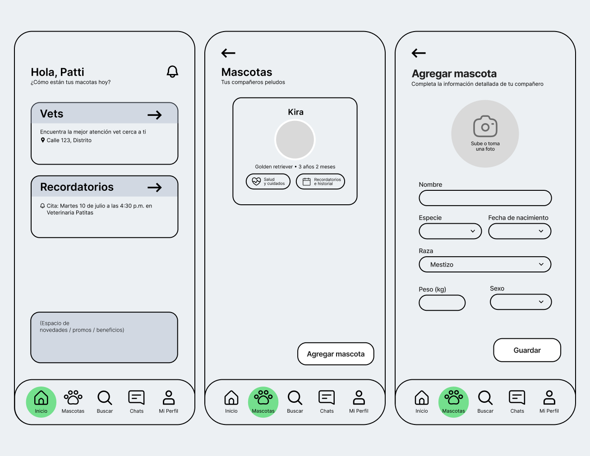
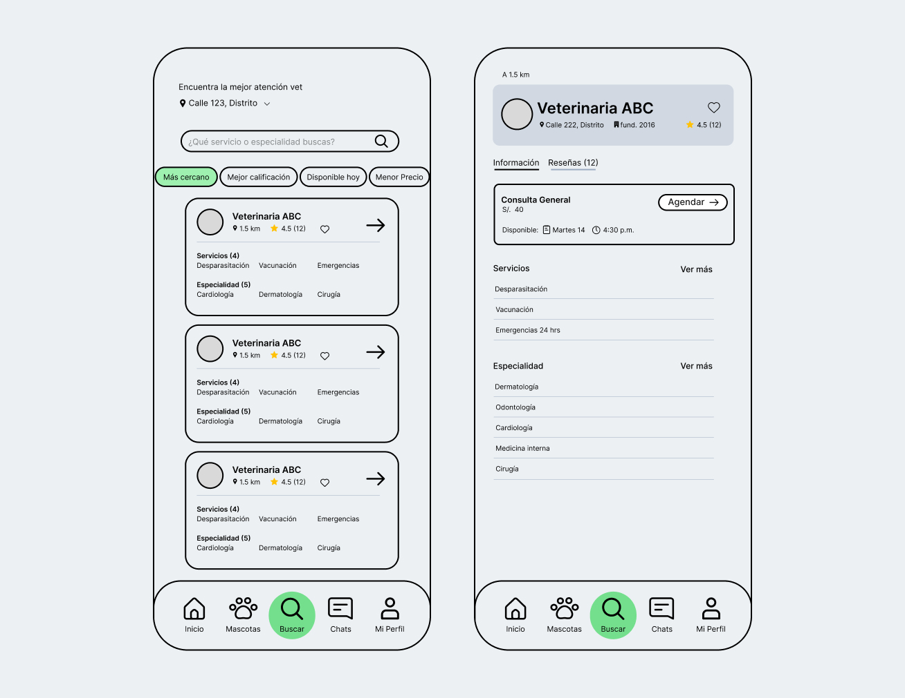
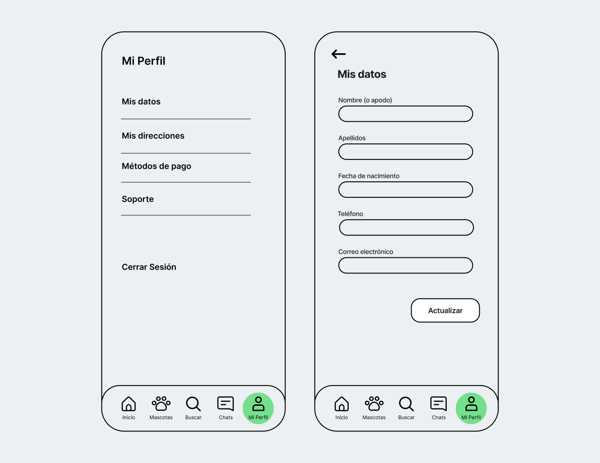
Presente ONG Web
NGOs · 2024-2025
Requirement: Update of landing pages aimed at B2B and B2C audiences.
Designed interfaces for new editions of events and programs, coordinating with development the delivery of graphic assets, branded illustrations (by: to+lab), and copy for implementation.
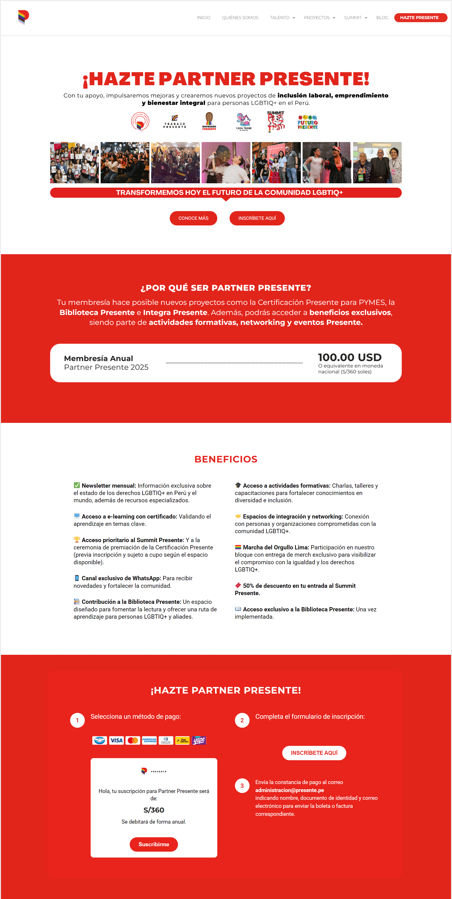
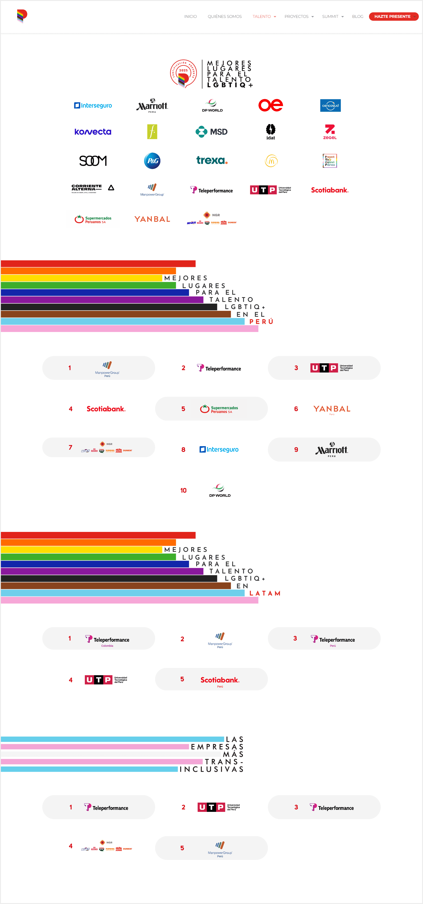
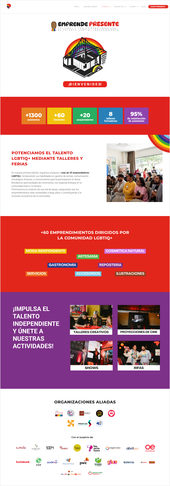
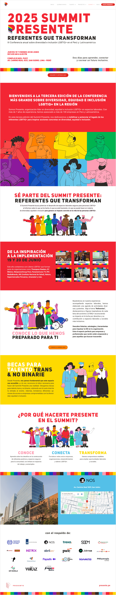
Manos a la Olla
Crowdfunding · 2021, 2022-2023
Problem: Lack of time and resources, combined with the pandemic context, prevented community kitchens from securing consistent donations.
Defined the product vision and strategy, prioritized features and simplified the donation process to increase recurring contributions.
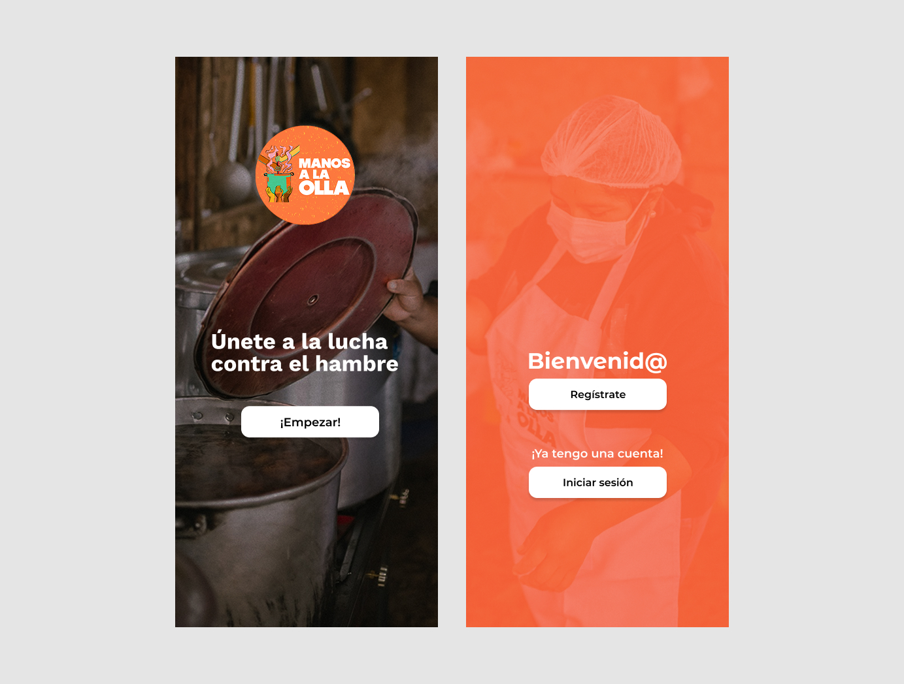
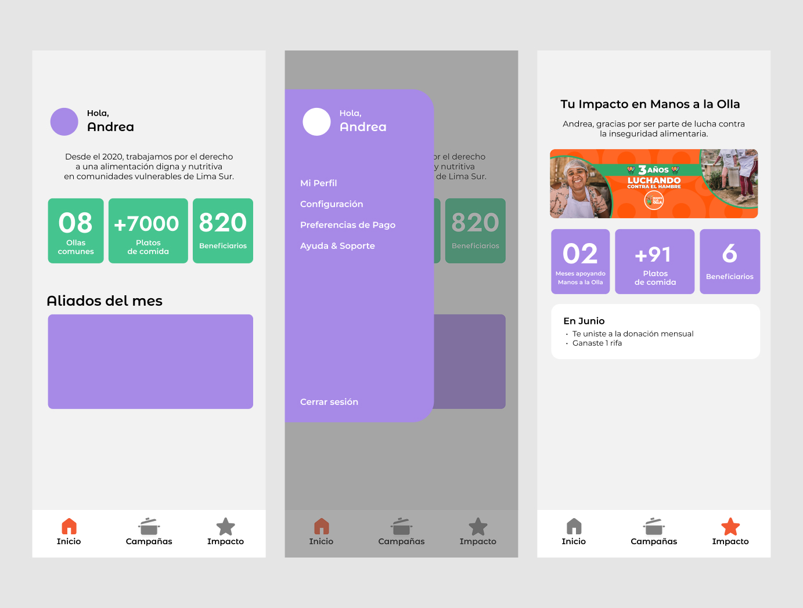
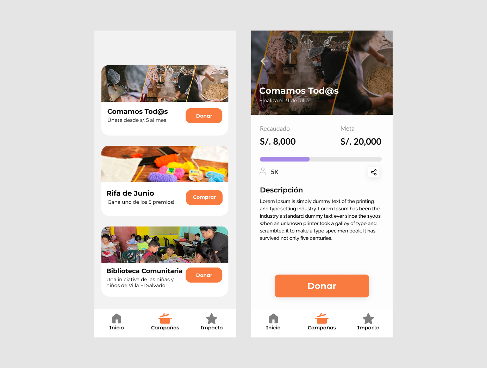
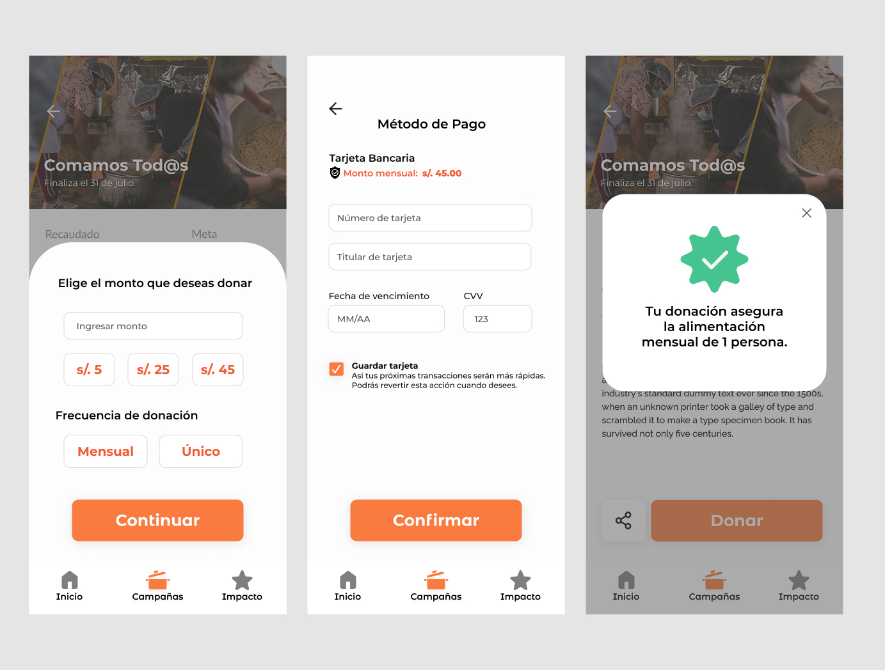
Metro
E-commerce · 2020
Redesign 1 – Lists / Goal: Encourage repurchase and discovery based on users' previously preferred products.
Redesign 2 – Chatbot / Goal: Add order tracking within the web/app.
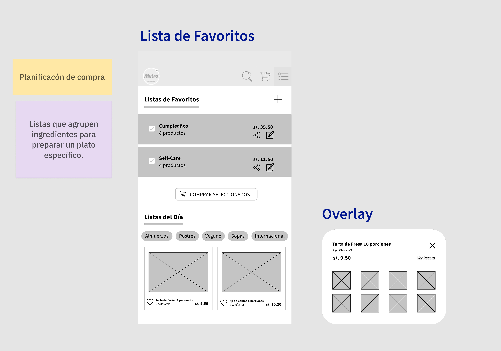
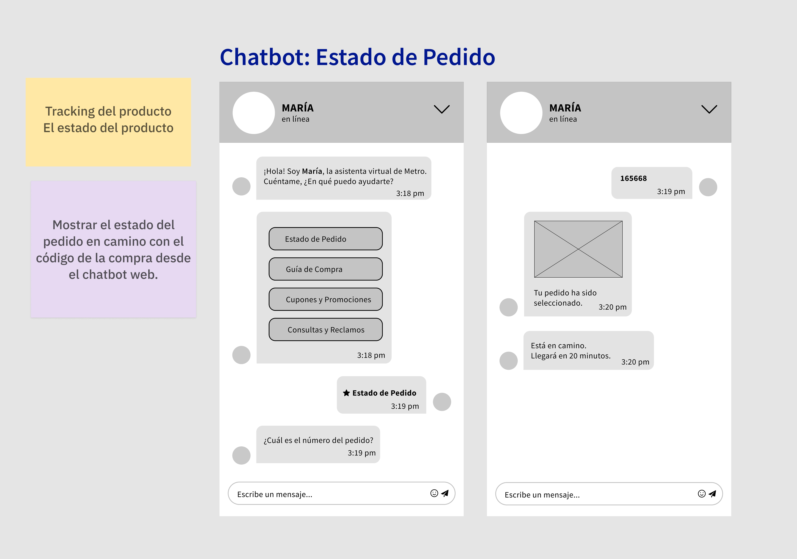